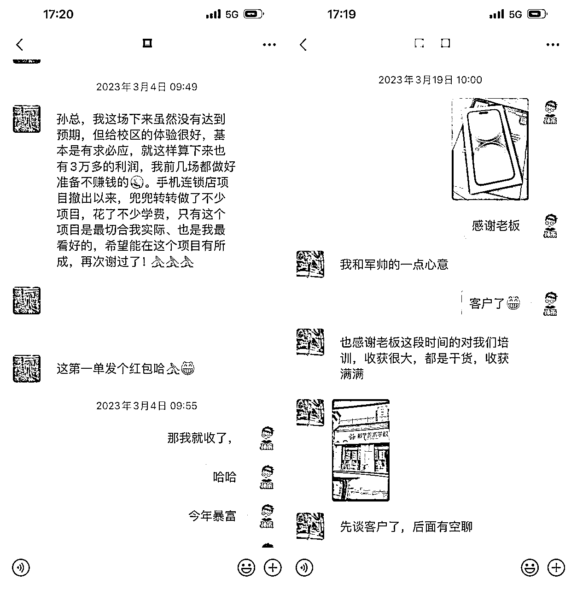
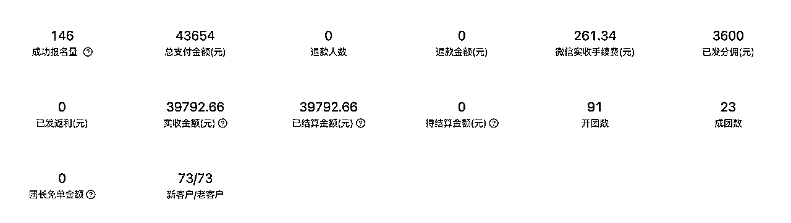
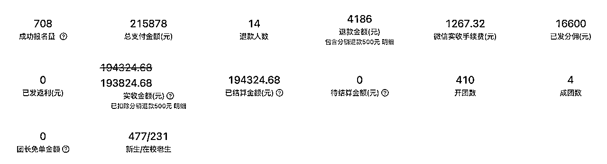
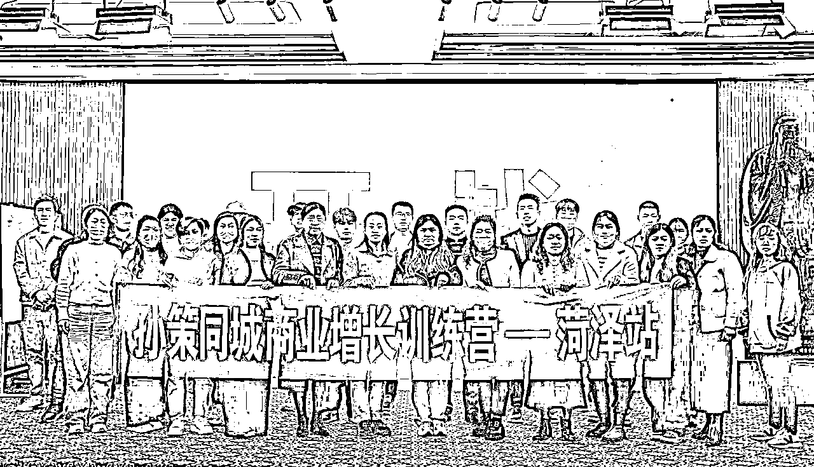
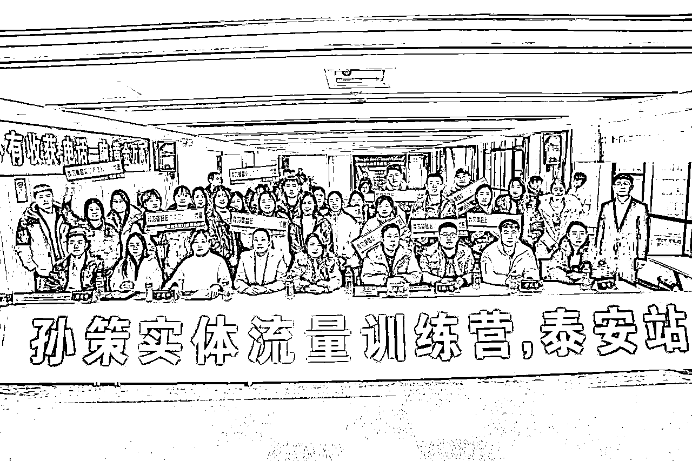
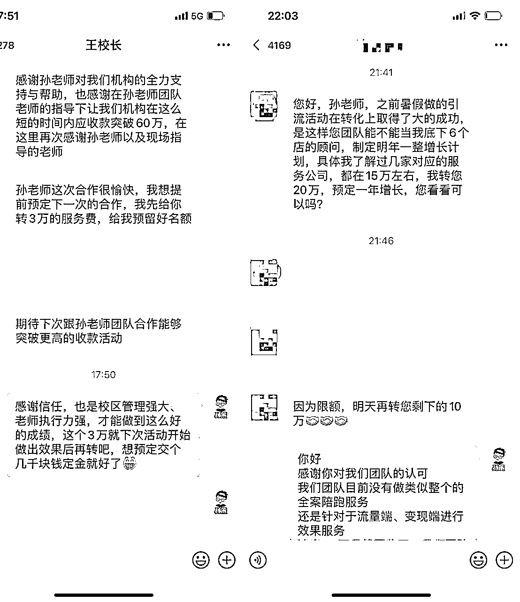
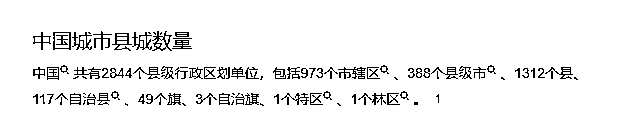
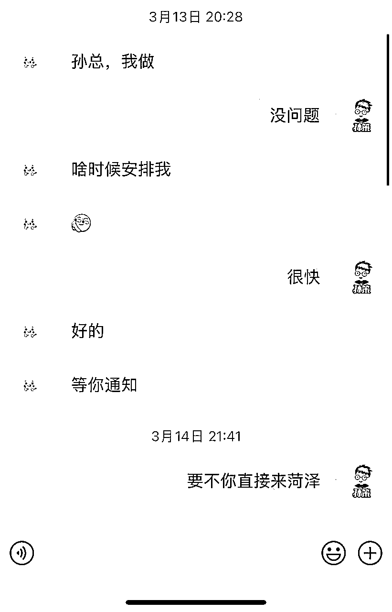
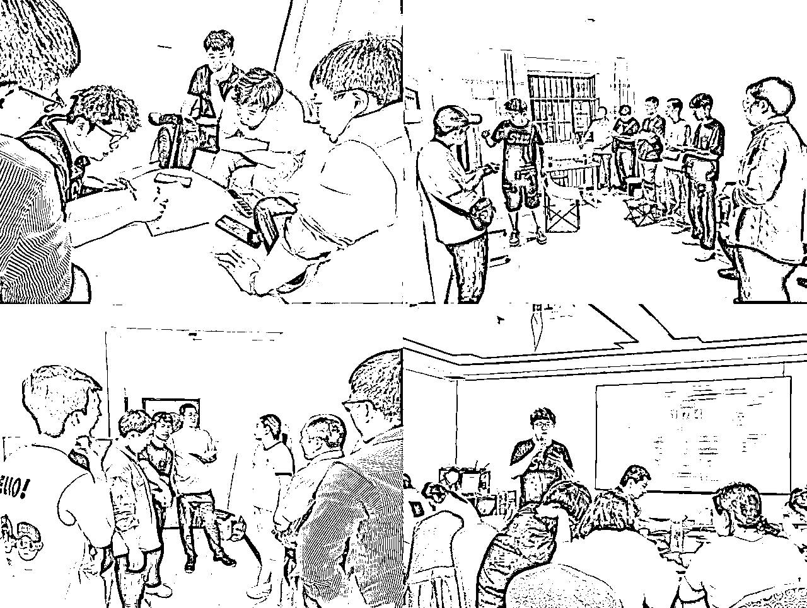
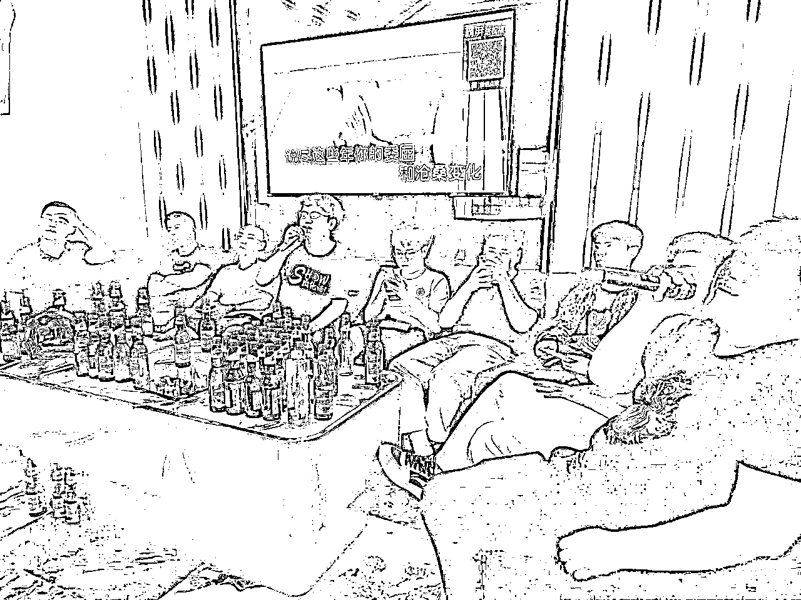

来源：https://aso41gpxhm.feishu.cn/docx/IbrbdJXYLouM40xrUpDcBywknEd
大家好，我是孙策，熟悉的老圈友应该知道，前几年一直在做线下拉新；
在线下拉新这个领域做到了全国头部，带领数百个圈友在这个领域赚到钱，其中不乏赚到几十万、几百万；
22年，我又深扎到同城这个赛道，帮助同城实体做驻店发售，流量增长，仅用4个月时间，公司单月收入过百万，
23年打磨整个的模型，切连锁品牌，单个连锁品牌给公司带来的收益就过200万；
24年开启全国化，4月份开始孵化模式，跟5、6个生财圈友开展孵化合作，开两个城，单月收入就近140万，70%毛利率，
纵观看了这么多创业朋友，拿到大结果的，无非是在某个行业做的深才能赚到大量的资金，对于挺多的朋友，还是要选择一个比较长线的赛道，慢慢的完善的自己能力，也有机会建立大的团队，短期的机会压根没有能力建立起大的团队，慢不一定真的慢，
现在互联网明显的红利已经见顶了，各种的流量套利机会越来越少，如果再执着于短期的流量套利，还是韭菜韭菜再韭菜，
很多人也想找到长期且没那么卷的赛道，同城就是其中之一，同城是普通人拿到大机会为数不多的流量洼地
同城的优势
竞争小，竞争对手就那么几个，打败同城的对手就能占领这个城市的制高点；
对标案例多，全国成熟的同城业务，放在自己的城市，大概率跑通；
可复制，几个城市跑通，全国范围内复制，就是追求千万级、亿级；
同城业务挺多的
个人服务类 本地招聘、本地相亲 上门维修 搬家
商业服务 实体流量服务、转化服务
推广类 共享充电宝、共享电动车等
一个业务行不行，就看自己身边有没有人拿到结果，在这个体系下，很多圈友已经拿到了结果
圈友 今夏，3个月赚到30万，累计赚到100万，现已经加入孵化团队
圈友 李叫兽 ，半年赚到150多万
圈友 初心大林，4月份加入孵化团队，个人月入几万
圈友 张磊，4月加入孵化团队，个人月入10万
圈友 大伟，累计赚到几十万

同城实体发售，就是帮助同城的实体商家用一套成熟的商业体系，做流量、做转化体系搭建，驻店一周完成几万到几十万不等的收款，因为之前本身我就是做线下拉新的，就是帮助淘宝、支付宝搞流量的，所以逻辑上通，我就切入了同城实体发售这个业务，所以，之前如果你做过线下推广相关的工作，天然的适合这个业务
我们选择的实体是瑜伽、水育、艺培、教培、医美、口腔等高客单实体店，做为我们的服务对象，这个业务的成立的逻辑在于实体的痛点很深
1、流量贵，
对于这类商家来讲，自然进店流量很少，有的在2、3楼的机会进店流量为0了，所以这类的商家基本都是靠外部流量的采买，他们一方面会在第三方招生团队来帮他们做流量，一方面会在抖音、小红书等流量采买，
因此，基本每一类实体都有大量的服务公司在帮他们做服务，这里面有服务的机会；
2、低转高
像艺培、瑜伽等这类的商家，都是进行体验一下课程，然后再进行升级高客单，超高客单，这里面就会出现转化率的问题，很多商家缺乏转化的能力，转化率高流量才能利用最大化，提高转化率是一整套系统化的流程，
因此，有大量的服务公司，会帮助商家搭建整个流程，进行集中的转化收款，这里面也有大量的机会；
3、毛利高，
艺培、瑜伽这类的课程类商家，是虚拟类产品，人员场地是恒定的，当覆盖掉成本之后，每多一个人其实就是多一个纯利润，给10个人上课与给30人上课的成本差不多一致的，
对于医美、口腔这类的仪器类商家，同样也是仪器项目，覆盖成本之后，每多一个也是多一个纯利润，
也就是说，当覆盖成本后，这类的商家会拿出大量的分成，给服务公司，对于服务公司来讲，有足够的利润；
4、竞争大
现在实体是很内卷的，以艺培为例，像学习书法，在这里学了，肯定不会在另一个地方学习了，一般一个校区上线一个活动，旁边的就会跟进，不跟进客户
越内卷就会寻求各种解法，越需要第三方服务公司进行跟进，
因此，这类商家，每一个类目都是大量的服务公司在服务，也有多个知识博主建立的不同的知识付费体系，
这个项目就是我们用成熟验证过的方案帮助高客单实体门店做进店流量，提升销售额，赚的是进店流量钱
春江水暖鸭先知，亦仁一直讲，知识付费是在走下坡路了，要往深度服务去走了，去效果付费
这个业务是纯利润性业务，做这个没有大量人力、硬件方面的投入，做就能带来利润，而不是回本路上的生意，
我们的收费方式，商家本身给我们不用付钱，是商家的用户给我们付钱，也就是说小商家也能接受，

服务于单个门店，营收4万
1.0模式，服务于一家店，或者是一个老板的多家店，以艺培为例，收益以在校学习的老学员为判断依据
在老学员200人，推出299元课包，根据老学员的粘性，老学员购买可能是30%-60%这个区间，也就是大概有个100多人购买299元，再通过裂变方案裂变一轮，100个老学员可能再拉100个新学员购买299，这就是200人，
200x299=60000，我们的收入就是6万，然后再抛掉一些激励礼品等，剩下就是我们的纯利润，
200人个299元再帮她们转化成千元、万元的高客单的产品，我们再获得转化的抽成，
1家店或者是一个老板的店老学员人数有限，
1.0模式，一场活动的营业收入在1-10万这个区间，服务周期在一个周以内，3天的集中引流，2天的转化。

服务于多个门店，收入近20万
2.0模式，切本地中小型连锁，帮这个连锁品牌进行流量、转化服务，
连锁品牌的市场部其实能力很差，对加盟商的赋能并不高，我们其实就成了这个品牌的外包的市场部，我们帮加盟这个品牌的店铺，做服务，
假设这个连锁品牌有20家店，一家店的生源是150，20x150=3000，3000个老学员，
3000有50%的老学员购买，1500人，每个人又拉了一个人，又拉来了1500人，
1500+1500=3000，3000x299=100万，抛掉礼品等激励，剩下的就是纯利润，
辅助转化，再获得一部分的收入
2.0模式，一个品牌的营业收入在10-50万这个区间，解决的是沟通定向的品牌商家；


3.0玩法，小联动，大联动，
当地的连锁品牌其实并不多，而且大量的机构其实流量并不多，3.0玩法其实就是流量的共享，不同品牌同一人群进行服务，
举个例子：舞蹈机构的客户是孩子，但是付钱的是宝妈，本质上宝妈用户，我们就找到宝妈用户的实体店，瑜伽、医美、艺培等共同做活动，进行流量互导，
小联动，就是3公里内，3-10家实体店进行联动，
大联动，就是全市范围内，50家以上的实体店进行联动，做教育节、亲子节等，
3.0模式，一次活动的营业收入在10万-100万这个区间；
实体浪潮式发售我们围绕三个点
1、引爆同城流量
2、裂变自有流量
3、转化到店流量
鉴于篇幅原因，写在下面了，详细复盘写在下面了

1、规模化上
一个业务能不能拿到大的结果，在于是否规模化，市场是不是足够大，对于门店交付这一块我们设计了统一的几个方案，基本都可以往上面套；单个门店的交付时间4天左右，交付时间足够短，也就是说一年单个人可以服务几十家实体门店；乡镇的上的门店也跑的通，也就是说符合要求的实体门店足够多，市场足够大；
2、普适性好
乡镇、区县、三四线城市、一二线城市，都有需求，也就是都可以操作，因为流量与收款的需求是普适性的，
我们在这几个地方都做了大量的测试，
一线城市的优势就是消费力强，单场营收会高， 三四线城市的优势就是门店认知不高，好沟通；
3、效果付费、创造价值
现在很多做门店服务的，有这两个特性
1、以服务费先行，承诺的是多少的曝光，中小型商家是无力承担服务费，也无法辨别服务费是否物有所值，
2、以放大为核心，就是基础门店很强，通过流量放大，但是基础门店很强并不是普遍现象，所以大量的中小型门店以及想无法辨别服务费的门店就没人愿意服务了，
所以我们主打效果付费，就是做多少效果，赚多少钱，真正为门店客户创造价值，可以弥补对应的空白；
4、足够长期
现在很多博主讲的碰见短期的机会迅速抓住，先赚一波，短期机会的抓住人都是在这个机会之前有一定的团队与资源资金的储备，才能快速抓住短期的机会，如果普通人抓住跟中彩票的机会，很多人进入就是韭菜选手，被收割的那群人，想快并不是真的快，
其实纵观看了这么多创业朋友，无非是在某个行业做的深才能赚到大量的资金，对于挺多的朋友，还是要选择一个比较长线的赛道，慢慢的完善的自己能力，也有机会建立大的团队，短期的机会压根没有能力建立起大的团队，慢不一定真的慢，
对于实体高客单服务，实体门店肯定是一直在的，实体门店内卷化的今天，对流量的需求、对变现的需求越来越大，且专业化程度越来越高，
做一个业务，要搞清楚自己的优势是什么，要不然进去还是韭菜，所以我给自己定义这几个竞争优势
1、区域总成本领先
获客成本低：
对于同类型的服务公司，跟当地的实体门店合作，一般都是靠电销，前期的准备都是以线上完成的，
可以线下面对面的销售，方案设计也可以进行面对面的沟通，碰见大客户还可以面对面沟通，所以获客成本低
服务成本低：
对于同类型的服务，异地服务的话，
1、需要先给艺培机构收取一定的保证金，因为万一过去放鸽子就白过去了，
2、还需要对方承担住宿费、差旅费，
这部分费用就省下来了，我们可以不让艺培机构付住宿费、差旅费，
2、局部规模效应
在这个城市下，我们团队人数最多，案例最多，所以获客
3、方案进化优势
目前我们驻店交付已经2000多个商家，还在不断交付中，我们方案是在不断进化
我在山东这个小区域内做了两年，我看到一个跟我差不多的同行，人家今年已经要冲击一个亿了，给了我很大的刺激，立志全国化，
全国化只靠自己很难完成的，走孵化，找到优秀的圈合作，打造一个一个的城市之王，在特定区域下都可以有一个团队可以深度服务于这个区域，制霸全中国，是占领这个市场较好的方式
现在商业的竞争性、内卷化已经超级高，团队化、专业化才能赚到钱，

我们孵化逻辑分为三条线
超级单兵模式，月入1~5万，也就是说，我们会重点培养他，成为优秀得单兵，
师傅制，匹配对应的团队，让他有团队，实现月入3~10万，
城市化合伙人，他有团队而且有管理能力，可以独立开城，可以实现月入5~20万
目前我们4月份开始孵化，已经在山东济宁、山东临沂、山东泰安、山东济南，启动孵化模式，一批人也拿到了结果，
接下来我们山东16个城市做完了，就该南下江苏、浙江了，所以团队要扩大，希望跟
1、用人做事，找到优秀的才俊
用人做事而不是做事用人，这是我们前几年总结下来的经验，人才才是最优质的资源，我在我朋友圈吧啦了一圈，定向私信了我觉得能力还不错的朋友，

对方也信任我，很幸运，这批人确实天然的适合这个业务，每天晚上进行持续的复盘，整个团队进化的特别快，效果特别好


2、案例先行，定位城市选择
对于b端生意，需要实体商家信任，他周边必须要有成功的案例，我们选择了我们有大案例的城市，我们选择了一个我们交付密集度还高的城市，案例
山东济宁
接下来，解决的就是触达问题，让商家觉得我们无处不在，才能提高合作率
3、电话销售，第一轮触达
电话销售有成单最好，没有成单，最起码能让这个城市的所有的老板知道有这么一伙人在做这个事情；
4、抖音定向宣传，第二轮触达
抖音也是同样的信息，让城市的老板也能刷的到；
5、线下邀请听课，第三轮触达
在这个城市租一个会场，邀请听一个线下课，拉势能，让这个城市的老板感受到团队的专业，另外有意向达成合作的，也可以进行一轮合作；
6、线下膜拜，第四轮触达
有了前三轮的铺垫，线下成交会变的更好一些，我们一家门店会有三个不同的商务人进行沟通，沟通设计流量方案，
7、案例影响，第五轮触达
当开始交付的时候，会把一些优秀的案例出来，我们会在定向的再周边商家再进行一定的沟通，成交率会增加，
8、转介绍，第六轮触达
当一些优秀的案例，我们会在现场让老板直接介绍客户，
通过六轮触达，把这个城市打透，由此可以看出来，这是一个很体系化、专业的事情，
所以，这个业务本身会有沟通，对人要求还是挺高的，需要不厌其烦的给商家解决问题，设计方案，当然也有大量的碰壁，吸收商家的负能量，任何事情都是不容易的
赚钱哪有容易的，只有付出超过了大部分人，才有可能获得相应的回报，这几年大部分人都深感焦虑，裁员降薪，副业受挫，做啥啥不顺，一方面是自己心不定诱惑太多了，另一方面是选错了赛道，在平台赚钱，依靠平台算法，都是小概率事件，要变成确定就是做大做精，以普通人的资源投入，极少能拿到大结果，大概率沦为一次次的韭菜，
近两年我发现我运气变好了，我总结下来，确实帮助很多实体老板了，帮他们渡过难关，他们的能量加持我自己了，从而进入了一个正向良性循环，这是一个长期的事业，可以0成本全国复制的项目，航海在即，期望更多的圈友能加入【同城实体发售】航海，一起扬帆正当时。